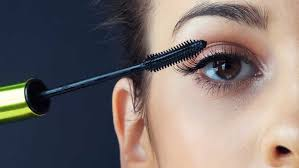
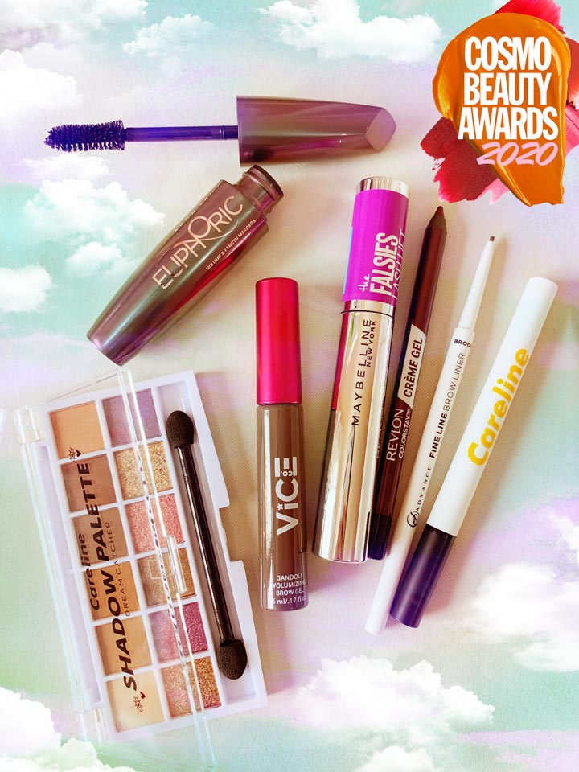
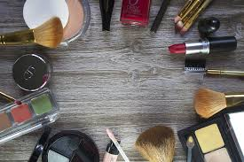

Cosmetics for eye: • Eye shadows • Eyebrow pencils • Mascara • Eye liners Cosmetics for nails: • Cuticle creams, oils & removers • Nail bleaches and stain removers • Nail lacquers & removers • Fingernail elongators Classification of Cosmetic ProductsClassification of Cosmetic Products contd..contd.. 8

Mascaras are products intended to enhance the appearance of the eyes by thickening, lengthening, and usually darkening the eyelashes. Mascaras are usually applied with a brush. Mascaras contain special ingredients that apply the product where it is needed in a precise and controlled manner. The products are specially formulated to ensure that potentially harmful microorganisms cannot grow and multiply. The safety of Mascaras is established by selection of ingredients that are safe and suitable for this purpose. In addition, Mascaras are assessed for their potential to cause skin irritation or cause allergic reactions. Product safety is also ensured though strict adherence to the principles of Quality Assurance and Good Manufacturing Practices. This includes testing the compatibility of the product with packaging as well as shelf-life stability.

